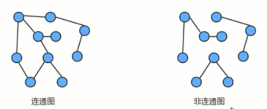

图的定义及分类：
定义：图是由一组顶点和一组能够将两个顶点相连的边组成的。
特殊的图：
1、自环：即一条连接一个顶点和其自身的边
2、平行边：连接同一对顶点的两条边
图的分类：
按照连接两个顶点的边的不同，可以把图分为一下两种：
无向图：边仅仅连接两个顶点，没有其他含义；
有向图：边不仅仅连接两个顶点，并且具有方向；
无向图：
图的相关术语：
1、相邻顶点：
当两个顶点通过一条边相连时，称这两个顶点是相邻的，并且称这条边依附于这两个顶点。
2、度：
某个顶点的度就是依附于该顶点的边的个数。
3、子图：
是一幅图的所有边的子集（包含这些边依附的顶点）组成的图；
4、路径：
是由边顺序连接的一系列的顶点组成的。
5、环：
是一条至少含有一条边且终点和起点相同的路径。
6、连通图：
如果图中任意一个顶点都存在一条路径到达另一个顶点、
7、连通子图：
一个非连通图由若干连通的部分组成，每一个连通的部分都可以称为该图的连通子图。

图的存储结构：
要表示一幅图，只需要表示清楚两部分：
1、图中所有的顶点；
2、所有连接顶点的边；
常见的图的存储结构有两种：邻接矩阵和邻接表。
邻接矩阵：
1、使用一个V*V的二维数组int[V][V] adj,把索引的值看做是顶点；
2、如果顶点v和顶点w相连，只需要将adj[v][w]和adj[w][v]的值设置为1，否则设置为0即可。

显然，邻接矩阵这种存储方式的空间复杂度是V^2,如果处理问题的规模比较大，内存空间可能会不够用。
邻接表：
1、使用一个大小为v的数组 Queue[V]adj,把索引看做是顶点。
2、每个索引处adj[v]存储了一个队列，该队列中存储的是所有与该顶点相邻的其他顶点。
很明显，邻接表的空间并不是线性级别的，后面我们一直采用临街表这种形式存储图。

无向图实现
无向图API设计

public class Graph{
//顶点数目
private final int V;
//边的数目
private int E;
private Queue<Integer>[]adj;
public Graph(int V){
//初始化顶点的数量
this.V=V;
//初始化边的数量
this.E=0;
//初始化邻接表
adj=new Queue[V];
for(int i=0;i<V;i++){
adj[i]=new Queue<Integer>();
}
}
//获取顶点的数目
public int V(){
return V;
}
//获取边的数目
public int E(){
return E;
}
//向图中添加一条边 V-W
public void addEdge(int V,int W){
//在无向图中，边是没有方向的，该边既可以是从v到w的边，又可以说是从w到v的边，因此，需要让w出现在v的邻接表中，还要让v出现在w的邻接表中
adj[V].enqueque(W);
adj[W].enqueque(V);
E++;
}
//获取和顶点V相邻的所有的顶点
public Queue<Integer> adj(int V){
return agj[V];
}
}
图的搜索：
深度优先搜索：
所谓的深度优先搜索，指的是在搜索时，如果遇到一个节点既有子节点，又有兄弟节点，那么先找子节点，然后再找兄弟节点。
深度优先搜索API

public class DepthFirstSearch{
//索引代表顶点，值表示当前顶点是否已经被搜索
private boolean[] marked;
//记录有多少个顶点与S顶点相通
private int count;
//构造方法，使用深度优先搜索对象找出G图顶点的所有相邻顶点
public DepthFirstSearch(Graph,int s){
this.marked=new boolean[G.V()];
this=0;
dfs(G,s);
}
//使用深度优先搜索找出G图中V顶点的所有相通顶点
priavte void dfs(Group G,int v){
//把V顶点标识为已搜索
marked[v]=true;
for(Integer w:G.adj(v)){
//判断当前w有没有被搜索过，如果没有被搜索过，则递归调用dfs进行深度搜索
if(!marked[w]){
dfs(G,w);
}
}
//相通顶点数量+1
count++;
}
//判断w顶点与s顶点是否相通
public boolean marked(int w){
return marked[w];
}
//获取与顶点s相通的所以有顶点的总数
public int count(){
return count;
}
}
广度优先搜索：
所谓的广度优先搜索，指的是在搜索时，如果遇到一个节点既有子节点，又有兄弟节点，那么先找兄弟节点，再找子节点。
广度优先搜索API

二叉树的层序遍历就是广度优先搜索
图的广度优先搜索API

public class BreadthFirstSearch{
//索引代表顶点，值表示当前元素是否已经被搜索
private boolean[] marked;
//记录有多少个顶点与s顶点相通
private int count;
//用来存储将搜索邻接表的顶点
private Queue<Integer> waitSearch;
public BreadthFirstSearch(Graph G,int s){
this.marked=new boolean[G.V()];
this.count=0;
this.waitSearch=new Queue<Integer>();
bfs(G,s);
}
//使用广度优先搜索找出G图中v顶点的所有相邻顶点
private void bfs(Graph G,int v){
//把当前顶点标识为已搜索
marked[v]=true;
//让顶点v进入队列，待搜索
waitSearck.enqueque(v);
//通过循环，如果队列不为空，则从队列中弹出一个待搜索的顶点进行搜索
while(!waitSearch.isEmpty()){
//弹出一个待搜索的顶点
Integer wait=waitSearch.dequeque();
//遍历wait顶点的邻接表
for(Integer w:G.adj(wait)){
if(!marked[w]){
gfs(G,w);
}
}
}
//让相同的顶点+1
count++;
}
public boolean marked(int w){
return marked[w];
}
public int count(){
return count;
}
}
案例：畅通工程续

解题思路：

实现：
day05 152
有向图：
定义：有向图是一副有方向的图，是由一组顶点和一组有方向的边组成的，每条方向的边都连着一对有序的顶点。
出度：由某个顶点指出的边的个数称为该顶点的出度。
入度：指向某个顶点的边的个数称为该顶点的入度。
有向路径：由一系列顶点组成，对于其中的每个顶点都存在一条有向边，从它指向序列中的下一个顶点。
有向环：一条至少含有一条边，且起点和终点相同的有向路径。
一副有向图中两个顶点v和w可能存在一下四种关系：
1、没有边相连;
2、存在从v到w的边；
3、存在从w到v的边；
4、既存在w到v的边，有存在v到w的边，即双向连接。
有向图API设计：

public class Digraph{
private final int V;
priavte int E;
private Queue<Integer>[] adj;
public Dig(int v){
this.V=v;
this.E=0;
this.adj=new Queue[V];
for(int i=0;i<adj.length;i++){
adj[i]=new Queue<>(Inteage);
}
}
public int V(){
return V;
}
public int E(){
return E;
}
//向有向图中添加一条边 v-w
public void addEdge(int v,int w){
//只需要让顶点w出现在顶点v的邻接表中，因为边是有方向的，最终，顶点v的邻接表中存储的相邻顶点的含义是：v->其他顶点
adj[v].enqueue(w);
E++;
}
public Queue<Integer> adj(int v){
return adj[v];
}
private Digraph reverse(){
Digraph r=new Digraph(V);
for(int v=0;v<V;v++){
//由该顶点指出的所有边
for(Integer w:adj[v]){
//原图中表示的由顶点v指向w的边
r.addEdge(w,v);
}
}
return Digraph;
}
}
二、拓扑排序：
给定一副有向图，将所有的顶点排序，使得所有的有向边均从排在前面指向排在后面的元素，此时，就可以明确指出每个顶点的优先级。


检测有向图中的环
如果要使用拓扑排序解决优先级问题，首先得保证图中没有环的存在。
检测有向图中的环的API设计

原理：


实现：
public class DirectedCycle{
//索引代表顶点，值表示当前顶点是否已经被搜索
private boolean[] marked;
//记录图中是否有环
private boolean hasCycle;
//索引代表顶点，使用栈的思想，记录当前顶点有没有已经处于正在搜索的有向路径上
priavte boolean[] onStack;
private DirectedCycle(Digraph){
this.marked=new boolean[G.V()];
this.hasCycle=false;
this.onStack=new boolean[G.V()];
//找到图中的每一个顶点，让每一个顶点作为入口，调用一次dfs进行搜索
for(int v=0;v<G.v();v++){
if(!marked[v]){
dfs(G,v);
}
}
}
private void dfs(Digraph G,int v){
//把顶点v标识为已搜索
mark[v]=true;
//把当前顶点进栈
onStack[v]=true;
//进行深度搜索
for(Integer w:G.adj(v)){
//判断如果当前顶点w没有被搜索过，则继续递归调用dfs方法完成深度优先搜索
if(!marked[w]){
dfs(G,w);
}
//判断当前顶点w是否已经在栈中，如果已经在栈中当前顶点之前处于正在搜索的状态，那么现在又要搜索一次，证明检测到环了
if(onStack[w]){
hasCycle=true;
return;
}
}
//把当前顶点出栈
onStack[v]=false;
}
//判断当前有向图G中是否有环
public boolean hasCycle(){
hasCycle;
}
}
基于深度优先的顶点排序：
深度优先搜索有一个特点：在一个连通子图上，每个顶点只会被搜索一次，在深度优先搜索的基础上加一行代码，把要搜索的顶点放入到线性序列的数据结构中，就完成了对顶点的排序。
顶点排序的API设计：

每搜索一个顶点，就将其放入到reversePost中，就可以实现顶点排序。


public class DepthFirstOrder{
//
private boolean[] marked;
priavte Stack<Integer> reversePost;
public DepthFirstOrder(Digraph G){
this.marked=new boolean[G,V()];
this.reversePost=new Stack<Integer>();
//遍历图中的每一个顶点，完成一次深度优先搜索
for(int v=0;v<G.V();v++){
if(!marked[v]){
dfs(G,v);
}
}
}
//基于深度优先搜索，把顶点排序
private void dfs(Digraph G,int v){
//标记当前v已经被搜索
marked[v]=true;
//通过循环深度搜索顶点v
for(Integer w:G.adj[v]){
//如果当前顶点w没有搜索，则递归调用dfs进行搜索
dfs(G,v);
}
// 让顶点v进栈
reversePost.push(v);
}
//获取顶点线性序列
public Stack<Integer> reversePost(){
return reversePost;
}
}
拓扑排序实现：
基于一副图，先检测有没有环，如果没有环，则调用顶点排序即可。
拓扑排序的API设计：

实现：
public class TopoLogical{
private Stack<Integer> order;
public TopoLogical(Digraph G){
DirectedCycle cycle=new DirectedCycle(G);
if(!cyc){
}
}
private boolean isCycle(){
}
public Stack<Integer>order(){
}
}
加权无向图：
加权无向图，需要给边关联一个权重值，因此可以使用对象来描述一条边。
加权无向图边的表示
API设计：

public class Edge implements Comparable<Edge>{
private final int v;
private final int w;
priavte final double weight;
//通过顶点w和v，以及权重构造一个边对象
public Edge(int v,int w,double weight){
this.v=v;
this.w=w;
this.weight=weight;
}
//获取边的权重值
public double weight(){
return weight;
}
//获取边上的一个点
public int either(){
return v;
}
//获取边上除了顶点vertex外的另一个顶点
public int other(int vertex){
if(vertex==v){
return w;
}else{
return v;
}
}
public int compareTo(Edge that){
//使用一个遍历记录比较的结果
int cmp;
//如果当前边的权重比较大，则让cmp=1;
if(this.weight()>that.weight){
cmp=1;
}
//如果当前边的权重值小，则让cmp=-1;
if(this.weight()<that.weight()){
cmp=-1
}
//如果当前边的权重值和that边的权重值一样大，则让cmp=0
if(this.cmp==this.cmp){
cmp=0;
}
return cmp;
}
}
加权无向图实现：
API设计：

public class EdgewightedGraph{
private final int v;
private int E;
private Queue<Edge>[] agj;
public EdgeWeightedGraph(int v){
this.v=v;
this.E=0;
this.adj=new Queue[v];
for(int i=0;i<adj.length;i++){
adj[i]=new Queue<Edge>();
}
}
//获取顶点的数量
public int v(){
return v;
}
//获取图中边的数量
public intE(){
return E;
}
//向加权无向图中添加一条边
public void addEdge(Edge e){
//需要让边e同时出现在e这个边的两个顶点的邻接表中
int v=e.either();
int w=e.other(v);
adj[v]=enqueue(e);
adj[w].enqueue(e);
//边的数量+1
E++;
}
//获取和顶点关联的所有边
public Queue<Edge>adj(int v){
return adj[v];
}
public Queue<Edge> edges(){
//创建一个队列对象，存储所有的边
Queue<Edge>allEdges=new Queue<>();
//遍历图中的每一个顶点，找到该顶点的邻接表，邻接表中存储了该顶点关联的每一条边
//因为这是无向图，所以同一条边出现在了它关联的两个顶点的邻接表中，需要让一条边只记录一次
for(int v=0;v<V;v++){
//遍历v顶点的邻接表，找到每一条和v关联的边
for(Edge e:adj(v)){
if(e.other(v)<v){
allEdges.enqueue(e);
}
}
}
return allEdges;
}
}
生成树：
连通图中的生成树必须满足以下 2 个条件：
- 包含连通图中所有的顶点；
- 任意两顶点之间有且仅有一条通路；
因此，连通图的生成树具有这样的特征，即生成树中边的数量 = 顶点数 - 1。
最小生成树：
最小生成树及其相关约定
定义：图的生成树是它的一颗含有所有顶点的无环连通子图，一副加权无向图的最小生成树它的一颗权值和（树中所有边的权重之和）最小的生成树。
约定：
只考虑连通图，最小生成树的定义说明它只能存在于连通图中，如果图不是连通的，那么分别计算每个连通子图的最小生成树，合并到一起称为最小生成森林。
所有边的权重都不相同，如果不同边的权重可以相同，那么一副图额最小生成树就可能不唯一了， 虽然本算法可以处理这种情况，但是为了好理解，约定所有边的权重都各不相同。
最小生成树原理：
树的性质：

切分定理：
要从一副连通图中找出该图的最小生成树，需要通过切分定理完成。
切分：
将图的所有顶点按照某些规则分为两个非空且没有交集的集合。
横切边：
连接两个属于不同集合的顶点的边称为横切边。

切分定理：
在一副加权图中，给定任意的切分，它的横切边中的权重最小者必然属于图中的最小生成树。

注意：一次切分产生的多个横切边中，权重最小的边不一定是所有横切边中唯一属于图的最小生成树的边
贪心算法：
贪心算法是计算图的最小生成树的基础算法，它的基本原理就是切分定理，使用切分定理找到最小生成树的一条边，不断地重复直到找到最小生成树的所有边。如果图有V个顶点，那么需要找到V-1条边，就可以表示该图的最小生成树。

计算图的最小生成树的算法有很多种，但这些算法都可以看做是贪心算法的一种特殊情况，这些算法的不同之处在于保存切分和判定权重最小的横切边的方式。
第一种算法：Prim算法
Prim算法的切分规则：
把最小生成树中的顶点看做是一个集合，把不在最小生成树中的顶点看做是另外一个集合。
Prim算法API设计：

Prim算法的实现原理：
将图中的顶点分为 ：最小生成树顶点和非最小生成树顶点。
初始，默认将顶点0放入最小生成树顶点，将顶点0的边看做是整个最小生成树的横切边，选择其中权值最小的边，将其顶点加入最小生成树顶点，更新整个树的横切边，直到所有的顶点都在最小生成树顶点。

使用最小索引优先队列保存横切边的权重。
public class PrimMST{
//索引代表顶点，值表示当前顶点和最小生成树之间的最短边
private Edge[] edgeTo;
private double[] disTo;
priavte boolean[] marked;
private IndexMinPriorityQueue<Double>pq;
//根据一副加权无向图，创建最小生成树计算对象
public PrimMST(EdgeWeightedGraph G){
//初始化edgeTo
this.edgeTo=new Edge[G.V()];
//初始化distTo
this.distTo=new double[G.V()];
for(int i=0;i<disTo.length;i++){
distTo[i]=Double.POSITIVE_INFINITY;
}
//初始化marked
this.marked=new boolean[G.V()];
//初始化pq
pq=new IndexMinPriorityQueue<Double>(G.V());
//默认让顶点0进入到树中，但是树中只有一个顶点0，因此，顶点默认没有和其他的顶点相连，所以让distTo对应位置处的值存储0.0
distTo[0]=0.0;
pq.insert(0,0.0);
//遍历索引优先队列，拿到最小横切边对应的顶点，把该顶点加入到最小生成树中
while(!pq.isEmpty()){
visit(G,pq.delMin());
}
}
//将顶点v添加到最小生成树中，并且更新数据
private void visit(EdgeWeightedGraph G,int v){
//把顶点v添加到最小生成树中
marked[v]=true;
//更新数据
for(Edge e:G.adj(v)){
//获取e边的另外一个顶点（当前顶点是v）
//判断另外一个顶点是不是已经在树中，如果在树中，则不做任何处理，更新数据
if(marked[w]){
continue;
}
//判断边e的权重是否小于从w顶点到树中已经存在的最小边的权重
if(e.weight()<distTo[w]){
//更新数据
edgeTo[w]=e;
distTo[w]=e.weight();
if(pq.contains(w)){
pq.changeItem(w,e.weight());
}else{
pq.insert(w,e.weight);
}
}
}
}
//获取最小生成树中的所有边
public Queue<Edge>edges(){
//创建队列对象
Queue<Edge> allEdges=new Queue<>();
//遍历edgeTo数组，拿到每一条边，如果不为null，则添加到队列中
for(int i=0;i<edgeTo.length;i++){
if(egdeTo[i]!=null){
allEdges.enqueque(edgeTo[i]);
}
}
return allEdge;
}
}
Kruskal算法
kruskal算法是计算一副加权无向图的最小生成树的另外一种算法，它的思想是按照边的权重（从小到大），将边加入到最小生成树中，加入的边不会与已经加入最小生成树的边构成环，直到树中含有V-1条边为止。
kruskal算法和prim算法的区别：
prim算法是一条边一条边的构造最小生成树，每一步都为一颗树添加一条边。kruskal算法 构造最小生成树的时候也是一条边一条边地构造，但是它的切分规则是不一样的。它的每一次寻找的边会连接一片森林中的两棵树。如果一副加权无向图有v个顶点组成，初始化情况下每个顶点都构成一颗独立的树，则V个顶点对应V棵树，组成一片森林，kruskal算法每一次处理都会将两棵树合并成一颗树，直到森林中只剩一颗树为止。

kruskal算法的API设计

kruskal算法实现原理

通过最小优先队列对所有的边以权值进行排序


public class KruskalMST{
//保存最小生成树的所有边
private Queue<Edge>mst;
//索引代表顶点，使用uf.connect(v,w)可以判断顶点v和顶点w是否在同一颗树中，使用uf.union(v,w)可以把顶点v所在的树和顶点w所在的树合并
private UF_Tree_Weighted uf;
//存储图中所有的边，使用最小优先队列，对边按照权重进行排序
priavte MinPriOrityQueue<Edge>pq;
//根据一副加权无向图，创建最小生成树计算对象
public KruskalMST(EdgeWeightedGraph G){
//初始化mst
this.mst=new Queue<Edge>();
//初始化uf
this.uf=new UF_Tree_weighted(G.V());
//初始化pq
this.pq=new MinPriorityQueue<>(G.E()+1);
for(Edge e:G.edges()){
pq.insert(e);
}
//遍历pq队列，拿到最小权重的边，进行处理
while(!pq.isEmpty()&&mst.size()<G.V()-1){
//找到权重最小的边
Edge e= pq.delMin();
//找到该边的两个顶点
int v=e.either();
int w=e.other(v);
//判断这两个顶点是否已经在同一颗树中，如果在同一棵树中，则不对该边进行处理，如果不在同一棵树中，则让着两个顶点属于的两颗树合并成一棵树
if(uf.connected(v,w)){
continue;
}
uf.union(v,w);
//让边e进入到mst队列中
mst.enqueque(e);
}
}
//获取最小生成树的所有边
public Queue<Edge>edges(){
return mst;
}
}
加权有向图边的表示
API设计：

public class DirectedEdge{
private final int v;//起点
private final int w;//终点
private final double weight;//当前边的权重
public DirectedEdge(int v,int w,double weight){
this.v=v;
this.w=w;
this.weight=weight;
}
public double weight(){
return weight;
}
public int from(){
return v;
}
public int to(){
return w;
}
}
加权有向图的实现：
在有向图的基础上，把边的表示切换成DirectedEdge对象即可。
API
最短路径：
最短路径定义及性质
定义：
在一副有向图中，从顶点s到顶点t的最短路径是所有从顶点s到顶点t的路径中总权重最小的那条路径。

性质：
1、路径具有方向性；
2、权重不一定等价于距离。权重可以是距离，时间，花费等内容，权重最小指的是成本最低。
3、只考虑连通图，一副图中并不是所有的顶点都是可达的，如果s和t不可达，那么它们之间也就不存在最短路径，为了简化问题，这里只考虑连通图。
4、最短路径不一定是唯一的，从一个顶点到达另外一个顶点的权重最小的路径可能有很多条，这里只需要找出一条。
最短路径树：
给定一副加权有向图和一个顶点s，以s为起点的一颗最短路径树是图的一副子树，它包含顶点s已经从s可达的所有顶点。这颗有向树的根节点为s,树的每条路径都是有向图中的一条最短路径。
最短路径树API设计：
计算最短路径的经典算法是dijstra算法

松弛技术：
生活中的松弛：

边的松弛

顶点的松弛：


Dijstra算法实现
public class DijkstraSP{
//索引代表顶点，值表示从顶点s到当前顶点的最短路径上的最后一条边
private DirectedEdge[] edgeTo;
//索引代表顶点，值从顶点s到当前顶点的最短路径的总权重
private double[] distTo;
//存放树中顶点与非树中顶点之间的有效横切边
private IndexMinPrioriorityQueue<Double>pq;
//根据一副加权有向图G和顶点S，创建一个计算顶点为s的最短路径树对象
public DijkstraSP(EdgeWeightedDigraph G,int s){
//初始化edgeTo
this.edgeTo=new DirectedEdge[G.V()];
//初始化disTo
this.disTo=new double[G.V()];
for(int i=0;i<distTo.length;i++){
distTo[i]=Double.POSITIVE_INFINITY;
}
//初始化pq
this.pq=new IndexMinPriorityQueue<>(G.V());
//找到图G中以s为起点的最短路径树
//默认让顶点s进入到最短路径树中
distTo[s]=0.0;
pq.insert(s,0.0);
//遍历pq
while(!pqisEmpty()){
relax(G,pq.delMin());
}
}
//松弛图G中的顶点V
public void relax(EdgeWeightedDigraph G,int v){
for(DirectedEdge edge:G.adj(v)){
//获取到该边的终点
int w=edge.to();
//通过松弛技术判断从顶点s到顶点w的最短路径是否需要先从顶点到v，然后再由顶点v到顶点w
if(distTo(v)+edge.weight()<distTo(w)){
distTo[w]=distTo[v]+edge.weight();
edgetTo[w]=edge;
//判断pq中是否已经存在顶点w，如果存在，则更新权重，如果不存在则直接添加
if(pq.contains(w)){
pq.changeItem(w,distTo(w));
}else{
pq.insert(w,distTo(w));
}
}
}
}
//获取从顶点s到顶点v的最短路径的总权重
public double distTo(int v){
return distTo[v];
}
//判断从顶点s到顶点v是否可达
public boolean hasPathTo(int v){
return distTo[v]<Double.POSITIVE_INFINITY;
}
//查询从起点s到顶点v的最短路径中的所有边
public Queue<DirectedEdge>pathTo(int v){
//判断从顶点s到顶点v是否可达，如果不可达，直接返回null
if(hasPathTo(v)){
return null;
}
//创建一个队列对象
Queue<DirectedEdge> allEdges=new Queue<>();
while(true){
DirectedEdge e=edgeTo[v];
if(e==null){
break;
}
allEdgees.enqueue(e);
v=e.from();
}
return allEdges;
}
}